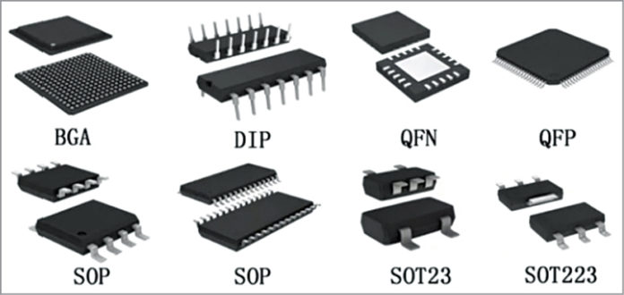
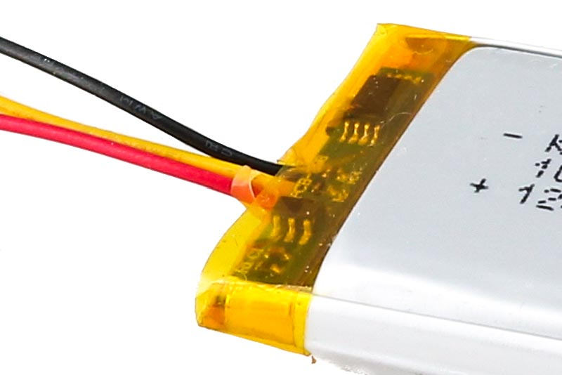

Micro controller
ATMEGA328P
Arduino Uno
Arduino Nano
Arduino Pro Mini
ESP8266EX
ESP 12F
ESP 01
ESP8285
ESP8285 uses ESP8266EX System on Chip with 1 MB Flash inside SoC.
ESP32 C3
ESP32 C3 is a RISC V based System on Chip (SoC), designed as replacement to ESP8266EX varient.
Types of Package
IC Packages are used to protect silicon chips, which are very fragile. These are plastic protecting casing for silicon chips.


Dual In-Line Package (DIP)
Pins on a DIP IC are spaced at 2.54 mm apart, standard spacing of bread board and prototype boards. IC Socket used instead of directly soldering IC to prototype board.
Small Outline Package (SOP)
Pins are on only 2 sides of ic, similar to DIP, but spacing of pins is lesser than 2.54. It is in Surface Mount Configuration.
Small Outline Transistor (SOT)
SMD devices such as rectangualar transistor, and SOD (Small Outline Diode).
Quad Flat Package (QFP)
Pins are on all 4 sides of IC, distance varies from 0.4 mm to 1 mm. Here Pins protude outside IC, which makes it very easy to solder with normal soldering iron also.
Quad Flat No-leads (QFN)
Similar to QFP, but pins are not protuded outside, almost all modern Micro Controller uses QFN configuration. (ex - RP2040, RP2350, all ESP32 SoC). QFN IC has Ground Pad beneth, which helps in disipating heat from IC to PCB Board.
Ball Grid Array (BGA)
Advanced IC used Ball Grid Array Configuration. Balls of Solder arranged in 2D Grid. (Ex Raspberry Pi SoC)
Power Supply
Most modern Micro Controller operate on 3.3V, and most widely used power supply battery is LiPo Battery
LiPo and Li-ion Battery Characteristics
| Feature | Lithium Polymer (LiPo) | Lithium-Ion (Li-ion) |
|---|---|---|
| Image |  |
 |
| Electrolyte | Solid Polymer Electrolyte | Liquid Electrolyte |
| Form Factor | Flexible , can be molded into any shape | Rigid, typically Cylinder |
| Cost | Expensive | less Expensive |
| Discharge (C Rating) | High | Moderate |
| Brands | generic | Molicel, Panasonic |

LiPo and Li-ion batteries have similar voltage curves as they rely on same lithium-ion chemistry.
| Voltage | Character |
|---|---|
| 4.2 V | Fully Charged, Dont exceed, may damage life of Battery |
| 3.7 V | Nominal Voltage |
| 3.0 V | Flat, no more useful current at this voltage |
| < 3.0 V | Damage to life of Battery |
Note : Battery Protection System is placed on LiPo cell, to stop overcharge or to stop over discharge 
C Rating
C Rating depicts how fast a battery charges or discharges. C Rating is critical for Drones, which requires faster discharge for payload or speed movement. Consider 10 Ah Battery.
| C Rating | Time |
|---|---|
| 1 C | 10 Amphs for 1 hr |
| 0.5 C | 5 Amphs for 2 hr |
| 2 c | 20 Amphs for 30 mins |